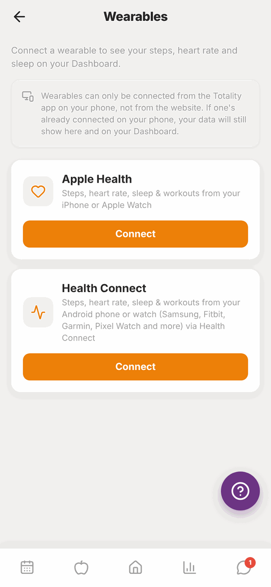

Totality for clients
Wearables
Connect Apple Health on iPhone or Health Connect on Android to see your steps, heart rate, sleep and workouts in Totality.
Connect your phone's health app and Totality shows today's steps, heart rate, sleep and workouts on your Home screen.
- iPhone: connect Apple Health. It also brings in data from an Apple Watch.
- Android: connect Health Connect. It brings in data from your phone and watch, for example Samsung, Fitbit, Garmin or Pixel Watch, if they share to Health Connect.
You can connect one at a time. Connecting must be done in the phone app, not the website.

Open Wearables#
Either:
- On Home, tap the Connect a wearable card, or
- Go to Settings and tap Wearables.
Connect Apple Health (iPhone)#
- Open the Totality app on your iPhone and go to Wearables.
- On Apple Health, tap Connect.
- Apple shows a list of health data. Turn on the items you want to share (or Turn On All) and tap Allow.
- You'll see "Apple Health is now connected."
If you tap Don't Allow by mistake, you'll see "Permission needed". Open your iPhone's Settings, then Health, then Data Access & Devices, tap Totality and turn the items on.
Connect Health Connect (Android)#
- Open the Totality app on your Android phone and go to Wearables.
- On Health Connect, tap Connect.
- Health Connect asks what Totality can read. Allow steps, heart rate, sleep and exercise.
- You'll see "Health Connect is now connected."
Health Connect is built into Android 14 and newer. On older phones, you might see "Health Connect needed". Install or update Health Connect from the Google Play Store, then try again.
To get data from a watch, open your watch's own app (for example Samsung Health, Fitbit or Garmin Connect) and turn on sharing to Health Connect.
See your data#
Once connected, the card on Home shows today's steps, bpm (heart rate), hrs sleep and workouts. Totality reads your latest numbers each time you open Home in the phone app.
On the website, you'll see the numbers your phone last sent. You can't connect from the website, but if you're connected on your phone, your data still shows there.
Disconnect#
Go to Wearables and tap Disconnect. Totality stops reading new data.
Questions#
I don't see Apple Health on my Android phone (or the other way round).
Each phone only shows its own option. iPhones show Apple Health. Android phones show Health Connect. The website shows both, but you can't connect from there.
It says "iPhone required" or "Android required".
You tried to connect the wrong one for your phone. Use Apple Health on iPhone, Health Connect on Android.
My steps are zero or out of date.
Open Home in the phone app to refresh. Check your health app actually has steps for today, and that Totality is allowed to read them in your phone's health settings.
Can I connect Fitbit, Garmin or WHOOP directly?
Not directly. On Android, set your watch's app to share to Health Connect, then connect Health Connect in Totality. On iPhone, set it to share to Apple Health.
What does Totality read from my health app?
Only today's totals for steps, heart rate, sleep and workouts, which show on your Home card. Disconnect any time to stop Totality reading new data.